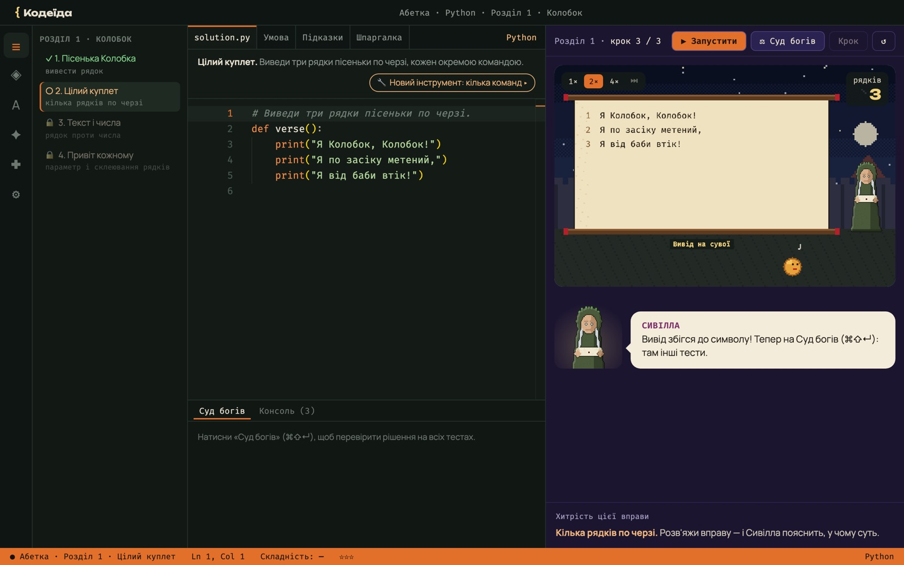

Хитрощі, а не відповіді
Кожен світ — один прийом: два вказівники, ковзне вікно, хеш-мапа, графи, DP. Підвідні вправи ведуть до справжньої задачі.
Гра, де твій код рухає героя. Разом з Енеєм і Лисом Микитою ти вивчаєш прийоми задач рівня LeetCode: два вказівники, хеш-мапи, графи, динамічне програмування. І бачиш, як працює кожен рядок.
Від бенкету богів до справжньої задачі з LeetCode і Абетки для новачків: як код рухає героя і чому Вовк програє хитрості.
Більшість застосунків дають задачі. Кодеїда вчить бачити в задачі прийом і розуміти, чому він працює.
Кожен світ — один прийом: два вказівники, ковзне вікно, хеш-мапа, графи, DP. Підвідні вправи ведуть до справжньої задачі.
Кнопка «Крок» виконує рядок за рядком, а герої у світі показують, що відбувається з даними.
Після кожного рішення видно, скільки кроків зробив би перебір. Складність O(n²) і O(n) стає наочною.
Енеїда, Франко, Леся Українка й народні казки. Сюжет, гумор і персонажі, які хочеться проходити далі.
На старті гра питає: «Чи вмієш ти програмувати?» Від відповіді залежить, звідки почнеш. Змінити можна будь-коли, прогрес не губиться.
Перша мова з нуля: Python, JavaScript чи TypeScript. Вісім розділів-казок, від першого виводу до власних функцій, і кожен урок написано саме для обраної мови. Сивілла вчить Енея в ніч перед падінням Трої.
Попелище Трої: одна нова ідея на вправу — команда, цикл, умова, лічильник — і перша задача з LeetCode.
Одразу в море Еола й далі: два вказівники, хеш-мапи, стек, бінарний пошук. Світ 0 лишається відкритим для повторення.

Редактор без AI, справжні тести і світ, що виконує твій код крок за кроком. Наприкінці — порівняння з рішенням Вовка, щоб було видно, навіщо хитрість.
posts. Обгородь двома стовпами ділянку, що вміщає найбільше води.Від попелища Трої до кузні Вулкана: Енеїда, Франко, Леся Українка, Коцюбинський, народні казки. Кожен світ — один прийом і його мешканці.
Гравець керує Енеєм, Микита підказує і жартує, а Вовк Неситий розв'язує все перебором і програє. Звірі поза своїм світом олюднені чарами Писанки.
Кожен пройдений світ відкриває сторінку: коли брати прийом, шаблон коду, складність і живий приклад.
Еней іде зліва, Микита справа, і вони рухаються назустріч.
let l = 0, r = a.length - 1; while (l < r) { if (good(l, r)) return [l, r]; if (tooSmall(l, r)) l++; else r--; }
Режим співбесіди: незнайомі задачі, таймер і жодної підказки. Перевірка, чи ти справді навчився впізнавати прийоми.
Безкоштовно й офлайн, без реєстрації. Гра сама оновлюється, щойно виходить нова версія.
Apple Silicon (M1 і новіші) · .dmg
Завантажити для Mac Для Mac з Intel ↓Підписано й нотаризовано Apple: відкривається без попереджень.
Windows 10 і 11 · інсталятор .exe
Завантажити для WindowsЯкщо SmartScreen попередить: «Докладніше» → «Усе одно запустити».
x64 · AppImage, без встановлення
Завантажити для LinuxДозволь запуск: chmod +x Kodeida-*.AppImage — і відкривай.
Проєкт відкритий: код, сюжет і арт можна дивитися, обговорювати й покращувати разом.
Шукаємо перших гравців і контриб'юторів: розробників, художників, методистів.